공조냉동기계산업기사 (2011-03-20 기출문제)
1과목: 공기조화
1. 외기온도 -11℃, 실내온도 18℃, 실내습도 70%(노점온도 12.5℃)일 때 외벽이 내면에 이슬이 생기지 않도록 하려면 외벽의 열통과율을 얼마로 해야 하는가? (단, 내면의 열전단율은 10kcal/m2h℃이다.)
- 1.95 kcal/m2h℃ 이하
- 1.95 kcal/m2h℃ 이상
- 1.89 kcal/m2h℃ 이하
- 1.89 kcal/m2h℃ 이상
(정답률: 55%)

2. 축냉식(빙축열) 설비를 흡수식 설비와 비교했을 때 장점으로 틀린 것은?
- 심야 전력을 사용하므로 운전비를 대폭 절감할 수 있다.
- 수전설비 규모를 일반 전기식의 0~60% 수준으로 줄일 수 있다.
- 고장시 축열조나 냉동기의 분리운전으로 신뢰성이 확보된다.
- 진동 및 소음이 적고 타 방식에 비해 설치면적이 적게 소요된다.
(정답률: 76%)
3. 시간당 5000m3의 공기가 지름 70cm의 원형 덕트 내를 흐를 때 풍속은 약 얼마인가?
- 1.4 m/s
- 2.6 m/s
- 3.6 m/s
- 7.1 m/s
(정답률: 57%)
4. 다음 사항 중 공조방식의 분류가 맞게 연결된 것은?
- 단일덕트 - 전공기 방식
- 2중덕트 방식 - 수 방식
- 유인 유닛방식 - 개별제어 방식
- 팬 코일 유닛방식 - 수ㆍ공기 방식
(정답률: 68%)
5. 냉방부하 계산 시 상당외기온도차를 이용하는 경우는?
- 유리창의 취득열량
- 외벽의 취득열량
- 내벽의 취득열량
- 침입외기 취득열량
(정답률: 71%)
6. 상당외기온도차를 구하기 위한 요소로서 해당되지 않는 것은?
- 흡수율
- 표면 열전달율(kcal/m2 h ℃)
- 직달 일사량((kcal/m2 h ℃)
- 외기 온도(℃)
(정답률: 79%)
7. 열관류율을 계산하는데 필요하지 않은 것은?
- 벽체의 두께
- 벽체의 열전도율
- 벽체표면의 열전달율
- 벽체의 함수율
(정답률: 85%)
8. 증기-물 또는 물-물 열교환기의 종류에 해당되지 않는 것은?
- 원통다관형 열교환기
- 전열 교환기
- 관형 열교환기
- 스파이럴 열교환기
(정답률: 77%)
9. 열원방식 중에서 토탈에너지방식(total energy system)에 해당되지 않는 것은?
- 가스터빈 방식
- 연료전지 방식
- 엔진 열펌프 방식
- 빙축열 방식
(정답률: 71%)
10. 다음 설명 중에서 틀리게 표현된 것은?
- 벽이나 유리창을 통해 들어오는 전도열은 감열뿐이다.
- 여름철 실내에서 인체로부터 발생하는 열은 잠열뿐이다.
- 실내의 기구로부터 발생열은 잠열과 감열이다.
- 건축물의 틈새로부터 침입하는 공기가 갖고 들어오는 열은 잠열과 감열이다.
(정답률: 84%)
11. 난방기기에 사용되는 방열기중 강제대류형 방열기에 해당하는 것은?
- 컨벡터
- 베이스보드 방열기
- 유닛히터
- 길드 방열기
(정답률: 59%)
12. 공기를 감습하기 위한 장치의 종류에 해당되지 않는 것은?
- 냉각 감습장치
- 압축 감습장치
- 흡수식 감습장치
- 전열교환 감습장치
(정답률: 51%)
13. 도서관의 체적이 630m3이고 공기가 1시간에 29회 비율로 틈새바람에 의해 자연환기될 때 풍량(m3/min)은 약 얼마인가?
- 295
- 304
- 444
- 572
(정답률: 70%)
14. 다음 중에서 공기조화가 부하를 바르게 나타낸 것은?
- 실내부하+외기부하+덕트통과열부하+송풍기부하
- 실내부하+외기부하+덕트통과열부하+배관통과열부하
- 실내부하+외기부하+송풍기부하+펌프부하
- 실내부하+외기부하+재열부하+냉동기부하
(정답률: 84%)
15. 다음 중에서 전공기방식이라고 볼 수 없는 것은?
- 정풍량 단일덕트 방식
- 변풍량 단일덕트 방식
- 이중덕트 방식
- 팬코일유닛 방식
(정답률: 83%)
16. 다음 그림은 송풍기의 특성 곡선이다. 점선으로 표시된 곡선 B는 무엇을 나타내는가?
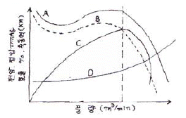
- 축동력
- 효율
- 전압
- 정압
(정답률: 79%)
17. 중앙식 공기조화기의 구성요소라고 할 수 없는 것은?
- 재열지
- 가습기
- 에어필터
- 오일필터
(정답률: 77%)
18. 실내의 현열부하를 qs 잠열부하를 qL 이라고 할 때 실내의 현열비 계산식으로 올바른 것은?
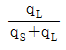
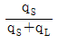
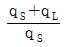
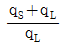
(정답률: 79%)
19. 온수난방의 특징으로 옳지 않은 것은?
- 증기난방보다 상하온도 차가 적고 쾌감도가 크다.
- 온도조절이 용이하고 취급이 간단하다.
- 예열시간이 짧다.
- 보일러 정지 후에도 여열에 의해 실내난방이 어느 정도 지속된다.
(정답률: 88%)
20. 다음 중 일반적인 취출구의 종류가 아닌 것은?
- 라이트-트로퍼형
- 아네모스텟형
- 머쉬룸형
- 웨이형
(정답률: 86%)
2과목: 냉동공학
21. 다음 중 암모니아 냉매의 특성이 아닌 것은?
- 수분을 함유한 암모니아는 구리와 그 합금을 부식시킨다.
- 대규모 냉동장치에 널리 사용되고 있다.
- 초저온을 요하는 냉동에 사용된다.
- 독성이 강하고 강한 자극성을 가지고 있다.
(정답률: 76%)
22. 유량 100L/min의 물을 15℃에서 9℃로 냉각하는 수냉각기가 있다. 이 냉동장치의 냉동효과가 40kcal/kg일 때 필요냉매 순환량은 몇 kg/h인가?
- 700kg/h
- 800kg/h
- 900kg/h
- 1000kg/h
(정답률: 68%)
23. 다음 중 냉동 관련 용어 설명 중 잘못된 것은?
- 제빙톤 : 25℃의 원수 1톤을 24씨간 동안에 -9℃의 얼음으로 만드는데 제거할 열량을 냉동능력으로 표시한다.
- 호칭냉동능력 : 고압가스안전관리법에 규정된 냉동 능력으로 환산한 능력이 100RT 이상은 허가 후 제조, 설치, 가동을 해야 한다.
- 냉동톤 : 0℃의 물 1톤을 24시간 동안에 0℃의 얼음으로 만드는데 필요한 냉동능력으로 1RT=3320kcal/h이다.
- 결빙시간 : 얼음을 얼리는데 소요되는 시간은 얼음 두께의 제곱에 비례하고, 브라인의 온도에는 반비례 한다.
(정답률: 63%)
24. 어떤 왕복동 압축기의 실린더가 내경 300mm, 행정 200mm, 실린더수 2, 회전수 300rpm 이라면 이 압축기의 이론적인 피스톤 배출량은 약 얼마인가?
- 348m3/h
- 479m3/h
- 509m3/h
- 623m3/h
(정답률: 55%)
25. 왕복동 압축기의 토출밸브에 누설이 있을 경우에 대한 설명이다. 맞는것은?
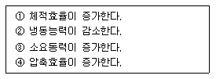
- ①, ③
- ②, ③
- ③, ④
- ②, ④
(정답률: 88%)
26. 공냉식 응축기의 특징으로 틀린 것은?
- 수냉식에 비하여 전열작용이 나쁘다.
- 응축온도가 낮아진다.
- 겨울에 사용할 대는 응축온도를 조절해야 한다.
- 냉각수 배관설비가 필요없다.
(정답률: 46%)
27. 어느 기체의 압력이 0.5MPa, 온도 150℃, 비체적 0.4m3/kg일 때 가스상수 (J/kgㆍK)를 구하면 약 얼마인가?
- 11.3
- 47.28
- 113
- 472.8
(정답률: 48%)
28. 냉매에 대한 설명으로 부적당한 것은?
- 응고점이 낮을 것
- 증발열과 열전도율이 클 것
- R-21는 화학식으로 CHCl2F이고, CClF2 - CClF2는 R-113이다.
- R-500는 R-12와 R-152를 합한 공비 혼합냉매라 한다.
(정답률: 81%)
29. 시퀀스제어에 사용되는 제어기기는 전기식과 전자식으로 구분되는데, 이 중 전자식에 관한 설명 중 틀린 것은?
- 다이오드, 트랜지스터, 레지스터 등으로 구성된다.
- 소형이며 신뢰성이 높다.
- 응답시간이 빠르며 열에 강하다.
- 약한 전류에고 회로의 접속점에서 장해를 일으키기 쉽다.
(정답률: 70%)
30. 카르노 사이클릐 기관에서 20℃와 300℃ 사이에서 작동하는 열기관의 열효율은 약 얼마인가?
- 42%
- 48%
- 52%
- 58%
(정답률: 65%)
31. 축열장치의 장점이 아닌 것은?
- 수처리가 필요 없고 단열공사비 축소
- 냉동장치의 용량감소 효과
- 수전설비 축소로 기본전력비 감소
- 부하 변동시도 안정적 열 공급
(정답률: 71%)
32. 어떤 변화가 가역인지 비가역인지 알려면 열역학 몇 법칙을 적용하면 되는가?
- 제 0 법칙
- 제 1 법칙
- 제 2 법칙
- 제 3 법칙
(정답률: 81%)
33. 냉동장치 내에 공기가 침입하였을 때의 현상은?
- 토출압력 저하
- 체적효율 증가
- 토출온도 저하
- 냉동능력 감소
(정답률: 77%)
34. 브라인의 부식방지를 위한 pH값으로 가장 적당한 것은?
- 5.5 ~ 6.5
- 7.5 ~ 8.2
- 9.5 ~ 11.0
- 11.5 ~ 15.5
(정답률: 79%)
35. 횡형 수냉응축기의 열통과율이 750kcal/m2℃, 냉각수량 450L/min, 냉각수 입구 온도 28℃, 냉각수 출구온도 33℃ 응축온도와 냉각수 온도와의 평균온도차가 5℃일 때, 이 응축기의 전열면적은 얼마인가?
- 46m2
- 40m2
- 36m2
- 30m2
(정답률: 53%)
36. 암모니아 냉동기에서 암모니아가 새고 있는 장소에 적색 리트머스 시험지를 대면 어떤 색으로 변하는가?
- 황색
- 다갈색
- 청색
- 홍색
(정답률: 84%)
37. 냉장 쇼케이스 수용품을 적정 온도와 습도로 유지 하면서 최종 수요자에게 직접 판매하기 위한 장치로, 이 쇼케이스가 만족해야 할 조건이라 할 수 없는 것은?
- 수용물의 품질을 가장 효과적으로 유지할 수 있는 것이 좋다.
- 소비자가 구매의욕을 느낄 수 있는 구조인 것이 좋다.
- 점포의 구조 및 판매양식에 적합한 것이 좋다.
- 최적의 온도를 유지할 수 있도록 하기 이하여 운전조작은 복잡한 것이 좋다.
(정답률: 87%)
38. 냉각탑의 능력산정 중 쿨링 레인지의 설명으로 맞는 것은?
- 냉각수 입구수온 × 냉각수 출구수온
- 냉각수 입구수온 - 냉각수 출구수온
- 냉각수 출구온도 × 입구공기 습구온도
- 냉각수 출구온도 - 입구공기 습구온도
(정답률: 70%)
39. 증기압축식 냉동장치에서 건조기의 설치위치로 올바른 것은?
- 증발기 전
- 응축기 전
- 압축기 전
- 팽창밸브 전
(정답률: 54%)
40. 냉동장치의 내압시험에 사용하는 것으로 가장 적합한 것은?
- 물
- 질소
- 알곤
- 산소
(정답률: 66%)
3과목: 배관일반
41. 방열기으 종류에서 구조 및 형태에 따라 분류하였다. 라디에이터류에 속하지 않는 것은?
- 패널형
- 컨벡터형
- 핀 튜브형
- 목책형
(정답률: 56%)
42. 다음 습공기 선도(i-x)에서 1→7의 변화를 맞게 설명한 것은?
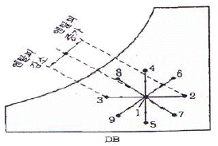
- 감온감습
- 감온가습
- 가열감습
- 가열가습
(정답률: 68%)
43. 다음 중 증기에 사용하는 벨로스식 방열기 트랩(최고 사용압력 100kPa)의 성능에서 밸브가 열리기 시작하는 작동 온도로 맞는 것은?
- 98℃ 이상
- 100℃ 이상
- 102℃ 이상
- 1⑤℃ 이상
(정답률: 63%)
44. 다음 중 스트레이너에 관한 설명으로 틀린 것은?
- 관내 유체속의 토사 또는 칩 등의 불순물을 제거한다.
- 종류로는 Y형, U형, V형이 있다.
- 스트레이너는 중요한 기기의 뒷쪽에 장착한다.
- 스트레이너는 유체흐름의 방향에 따라 장착해야 한다.
(정답률: 82%)
45. 흡수식 냉동기의 단점으로 맞는 것은?
- 기기 내부가 진공상태로서 파열의 위험이 있다.
- 설치면적 및 중량이 크다.
- 냉온수기 한 대로는 냉ㆍ난방을 겸용할 수 없다.
- 소음 및 진동이 크다.
(정답률: 63%)
46. 다음 중 폭발하한계 하한이 10% 이하인 것과 폭발한계의 상한과 하한의 차가 20% 이사인 고압가스는?
- 가연성 가스
- 조연성 가스
- 불연성 가스
- 비독성 가스
(정답률: 78%)
47. 공기조화설비에서 덕트 주요 요소인 가이드 베인에 대한 설명으로 적합한 것은?
- 소형 덕트의 풍량 조절용이다.
- 대형 덕트의 풍량 조절용이다.
- 덕트 분기 부분의 풍량 조절을 한다.
- 덕트 밴드부에서 기류를 안정시킨다.
(정답률: 74%)
48. 증가난방 배관에서 증기트랩을 사용하는 주목적은?
- 관내의 온도를 조절하기 위해서
- 관내의 압력을 조절하기 위해서
- 관내의 증기와 응축수를 분리하기 위해서
- 배관의 신축을 흡수하기 위해서
(정답률: 83%)
49. 트랩의 봉수가 파괴되는 원인은 여러 가지가 있는데 위생기구에서 배수가 만수 상태로 트랩을 통과할 때 봉수가 빨려 나가 파괴되는 원인은 무엇인기?
- 감압에 의합 흡입 작용
- 자기 사이펀 작용
- 증발 작용
- 모세관현상
(정답률: 76%)
50. 빔(Beam)에 턴버클을 연결하여 파이프 아래 부분을 받쳐 달아 올리는 것으로 수직 방향의 변위가 없는 곳에 사용하는 것은?
- 레스트레인트
- 리지드 행거
- 스프링 행거
- 콘스탄트 행거
(정답률: 75%)
51. 강관에서 직관을 이용하여 중심각 135°의 6편 마이터를 제작하려고 한다. 절단 각으로 맞는 것은?
- 11.25°
- 13.5°
- 22.5°
- 27.0°
(정답률: 51%)
52. 도시가스 배관의 손상을 방지하기 위하여 도시가스배관 주위에서 다름 매설물을 설치할 때의 리격거리로 맞는 것은?
- 20cm
- 30cm
- 40cm
- 50cm
(정답률: 78%)
53. 고온ㆍ고압용 관에 가장 적합한 신축 이음쇠는?
- 루우프형
- 스위블형
- 벨로즈형
- 슬리이브형
(정답률: 73%)
54. 다음 중 밸브를 완전히 열었을 때 유체의 저항손실이 가장 큰 밸브는?
- 슬루스 밸브
- 글로브 밸브
- 버터플라이 밸브
- 볼 밸브
(정답률: 71%)
55. 압력탱크식 급수방법에서 압력탱크를 설계할 때 직접 필요한 요소로 틀린 것은?
- 최고층 수전에 해당하는 압력
- 기구별 소요압력
- 관내 손실 수두압
- 급수펌프의 토출압력
(정답률: 52%)
56. 다음 중 연관이나 황동관을 가장 잘 부식시키는 것은?
- 극연수
- 연수
- 적수
- 경수
(정답률: 66%)
57. 급수 배관을 시공할 때 일반적인 사항을 설명한 것 중 잘못된 것은?
- 급수관에서 상향 급수는 선단 상향구배로 한다.
- 급수관에서 하향 급수는 선당 하향구배로 하며, 부득이 한 경우에는 수평으로 유지한다.
- 급수관 최하부에 배수 밸브를 장치하면 공기빼기를 장치할 필요가 없다.
- 수격작용 방지를 위해 수전 부근에 공기실을 설치한다.
(정답률: 71%)
58. 각 기구의 트랩마다 통기관을 설치하여 통기방식 중 안정도가 높고 자기 사이펀 작용에도 효과가 있으며 배수를 완전하게 할 수 있는 이상적인 통기 방식은?
- 각개 통기
- 루프 통기
- 신정 통기
- 회로 통기
(정답률: 78%)
59. 그림과 같이 호칭지름이 표시될 때 강관이음쇠의 규격을 바르게 표시한 것은? (단, 그림의 부속은 티(Tee)이다.)
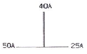
- 50×40×25
- 40×50×25
- 50×25×40
- 25×40×50
(정답률: 77%)
60. 급탕배관의 신축이음과 관계없는 것은?
- 신축곡관 이음
- 슬리브형 이음
- 벨로우즈형 이음
- 플랜지형 이음
(정답률: 69%)
4과목: 전기제어공학
61. 다음 내용의 ( )아네 차례로 들어갈 알맞은 내용은?
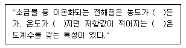
- 진하, 낮아, +
- 진하, 높아, -
- 연하, 낮아, -
- 연하, 높아, +
(정답률: 66%)
62. 유도전동기의 속도제어에 사용할 수 없는 전력 변환기는?
- 인버터
- 사이클로 컨버터
- 위상제어기
- 정류기
(정답률: 67%)
63. 제백 효과(Seebeck effect)를 이용한 센서에 해당하는 것은?
- 저항 변화용
- 인덕턴스 변화용
- 용량 변화용
- 전압 변화용
(정답률: 72%)
64. 주파수 60[Hz]의 정현파 교류에서 위상차 π/6[rad]은 약 몇 초의 시간차인가?
- 2.4×10-3
- 2×10-3
- 1.4×10-3
- 1×10-3
(정답률: 55%)
65. 전기로의 온도를 1000℃로 일정하게 유지시키기 위하여 열전온도계의 지시값을 보면서 전압조정기로 전기로에대한 인가전압을 조절하는 장치가 있다. 이 경우 열전온도계는 다음 중 어느 것에 해당 되는가?
- 조작부
- 검출부
- 제어량
- 조작량
(정답률: 74%)
66. 다음 블록선도 중 안정한 계는?
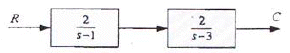
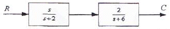
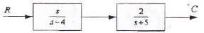
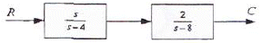
(정답률: 64%)
67. 220[V] 3상 4극 60[Hz]인 3상 유도전동기가 정격전압, 저역 주파수에서 최대 회전력을 내는 슬립은 16[%]이다. 200[V] 50[Hz]로 사용할 때 최대 회전력 발생 슬립은 약 몇 [%]가 되는가?
- 15.6
- 17.6
- 19.4
- 21.4
(정답률: 35%)
68. 다음 중 유도전동기의 회전력에 관한 설명으로 옳은 것은?
- 단자전압과는 무관하다.
- 단자전압에 비례한다.
- 단자전압의 2승에 비례한다.
- 다자전압의 3승에 비례한다.
(정답률: 72%)
69. 그림과 같은 회로의 합성저항은 몇 [Ω]인가?
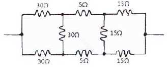
- 25
- 30
- 35
- 50
(정답률: 49%)
70. 전류계와 전압계의 측정범위를 확장하기 위하여 저항을 사용하는데, 다음 중 저항의 연결방법으로 알맞은 것은?
- 전류계에는 저항을 병렬연결하고, 전압계에는 저항을 직렬연결 해야 한다.
- 전류계 및 전암계에 저항을 병렬연결 해야 한다.
- 전류계에는 저항을 직렬연결하고, 전압계에는 저항을 병렬연결 해야 한다.
- 전류계 및 전압계에 저항을 직렬연결 해야 한다.
(정답률: 55%)
71. 전기기기의 보호와 운전자의 안전을 위해 사용되는 그림의 회로를 무엇이라고 하는가? (단, A와 B는 스위치, X1 과 X2는 릴레이이다.)
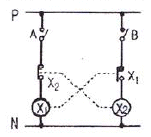
- 자기유지회로
- 일치회로
- 변환회로
- 인터록회로
(정답률: 71%)
72. 다음 중 서보기구에 속하는 제어량은?
- 회전속도
- 전압
- 위치
- 압력
(정답률: 78%)
73. 피드백제어로서 서보기구에 해당하는 것은?
- 석유화학공장
- 발전기 정전압장치
- 전철표 자동판매기
- 선박의 자동조타
(정답률: 78%)
74. 어떤 코일에 흐르는 전류가 0.01초 사이에 일정하게 50[A]에서 10[A]로 변할 때 20[V]의 기전력이 발생한다고 하면 자기인덕턴스는 몇 [mH] 인가?
- 5
- 40
- 50
- 200
(정답률: 41%)
75. 제어계에서 동작 신호(편차)에 비례하는 조작량을 만드는 제어 동작을 무엇이라 하는가?
- 비례 동작(P 동작)
- 비례 적분 동작(PI 동작)
- 비례 미분 동작(PD 동작)
- 비례 적분 미분 동작(PID 동작)
(정답률: 60%)
76. 내부 장치 또는 공간을 물질로 포위시켜 외부 자계의 영향을 차폐시키는 방식을 자기차폐라 한다. 다음 중 자기차폐에 가장 좋은 물질은?
- 강자성체 중에서 비투자율이 큰 물질
- 강자성체 중에서 비투자율이 작은 물질
- 비투자율이 1보다 작은 역자성체
- 비투자율과 관계없이 두께에만 관계되므로 되도록 두꺼운 물질
(정답률: 72%)
77. 목표치가 미리 정해진 시간적 변화를 하는 경우 제어량을 변화시키는 제어를 무엇이라고 하는가?
- 정치제어
- 프로그래밍제어
- 추종제어
- 비율제어
(정답률: 59%)
78. 다음 블록선도에서 틀린 식은?
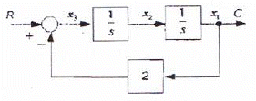
- x3(t)=r(t)-2c(t)
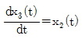
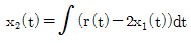
- x1(t)=c(t)
(정답률: 53%)
79. 그림과 같은 계전기 접점회로의 논리식은?
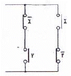
- XY
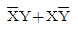
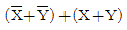
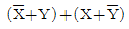
(정답률: 72%)
80. 유도전동기의 기동방법 중 용량이 5[kW] 이하인 소용량 전동기에는 주로 어떤 기동법이 사용된는가?
- 전전압 기동법
- Y-△ 기동법
- 기동보상기법
- 리액터 기동법
(정답률: 57%)